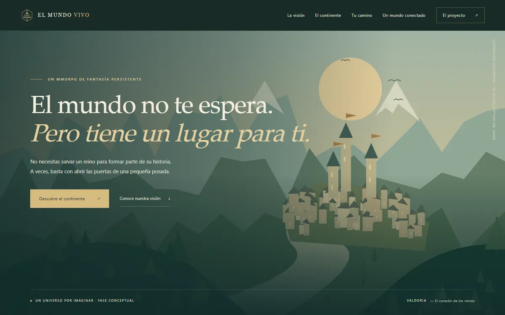
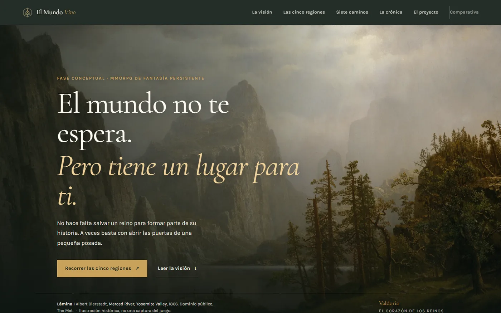

Comparativa de diseño · Sin puntuaciones
Antes y después, sin adornos.
Esta página compara dos versiones reales del mismo sitio: la primera publicada y el rediseño actual. No hay notas de calidad ni porcentajes: solo lo que cada versión hace, cómo lo hace y qué se pierde o se gana con el cambio.
Las capturas se tomaron con Chrome el 18 de octubre de 2026 sobre los archivos del repositorio. La versión anterior permanece intacta en antes/index.html para que cualquiera pueda comprobarla.
La portada


Qué cambia, punto por punto
| Aspecto | Versión anterior | Rediseño |
|---|---|---|
| Imagen principal | SVG propio: sol grande y ciudad pequeña; el elemento más brillante no era el destino. | Lámina de dominio público (Bierstadt, 1866) a sangre, con la montaña y el valle como foco y el texto sobre un degradado. |
| Aviso conceptual | Texto vertical diminuto en el borde derecho, ilegible. | Ficha horizontal en el pie de la portada, con autor, año, licencia y la aclaración de que no es una captura. |
| Tipografía | Serif del sistema y microtexto de 9–10 px con tracking amplio. | Cormorant Garamond y Karla servidas en local; ningún texto funcional por debajo de 12 px. |
| Atlas | Mapa SVG genérico y cinco paisajes vectoriales casi idénticos. | Índice de cinco regiones y una lámina distinta por región, con atribución propia y navegación por teclado. |
| Composición | Bloques separados por huecos amplios; texto e imagen como islas. | Rejilla editorial continua: la imagen y el texto comparten columna, filete y medida. |
| Estado del proyecto | Aviso de fase conceptual en la portada y en «El horizonte». | Se conserva, con la misma honestidad: sin fechas, sin capturas, sin registros. |
Qué se conserva
El universo, las cinco regiones, los siete caminos, la crónica de siete días, la navegación por teclado, el estado conceptual y la ausencia de analítica, formularios y cookies propias. La versión anterior sigue disponible sin cambios, y también el manifiesto y la política de privacidad.
Qué se pierde
La versión anterior era íntegramente vectorial y pesaba menos; el rediseño incorpora seis imágenes WebP (unas 1,1 MB en total) y dos familias tipográficas locales. También desaparece el mapa esquemático del continente: se sustituye por un índice de regiones con láminas, porque el mapa anterior no aportaba información que el texto no diera ya.
Páginas completas
Captura completa anterior (escritorio) · captura completa actual (escritorio) · actual en móvil 390 px.